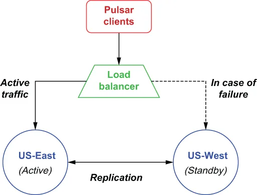

In this situation you are looking to keep an up-to-date copy of the cluster at a different geographical location, so you can resume operations in the event of a failure with a minimal amount of data loss or recovery time. Since Pulsar doesn’t provide a means for specifying one-way replication of namespaces, the only way to accomplish this configuration is by restricting the clients to a single cluster, known as the active cluster, and having them all failover to the standby cluster only in the event of a failure. Typically, this can be accomplished via a load balancer or other network-level mechanism that makes the transition transparent to the clients, as shown in figure B.5. Pulsar clients publish messages to the active cluster, which are then replicated to the standby cluster for backup.
在这种情形下，你所追求的是在另一个地理位置上保有一份随时可用的集群副本，以便在发生故障时，能够以最少的数据丢失或最短的恢复时间来恢复运转。由于 Pulsar 并没有提供指定命名空间单向复制的手段，完成这种配置的唯一办法就是：把各个客户端限制在单一集群上（即所谓的活动集群），并且只在发生故障时才让它们全部故障转移到那个备用集群。通常，这可以借助一个负载均衡器或其他网络层机制来实现——它让这个切换对客户端而言是透明的，如图 B.5 所示。Pulsar 客户端把消息发布到那个活动集群，随后这些消息被复制到备用集群以作备份。

Figure B.5 You can use asynchronous geo-replication to implement an active-standby scenario in which all of the data within a given namespace is forwarded to a cluster that will be used only in the event of a failure.
图 B.5 你可以用异步异地复制来实现一种主备场景：某个给定命名空间内的全部数据都被转发到一个只在故障发生时才会被使用的集群。
As you may have noticed, the replication of the Pulsar data will still be done bi-directionally, which means that the US-West cluster will attempt to send the data it receives during the outage to the US-East cluster. This might be problematic if the failure is related to one or more components within the Pulsar cluster or the network for the US-East cluster is unreachable. Therefore, you should consider adding selective replication code inside your Pulsar producers to prevent the US-West cluster from attempting to replicate messages to the US-East cluster, which is most likely dead.
正如你可能已经注意到的，Pulsar 数据的复制仍然是双向进行的——这意味着 US-West 集群会试图把它在中断期间所收到的数据发送给 US-East 集群。如果故障与 Pulsar 集群内的一个或多个组件有关，或者 US-East 集群所在的网络已不可达，这就可能会出问题。因此，你应当考虑在自己的 Pulsar 生产者中加入选择性复制的代码，以阻止 US-West 集群试图把消息复制到 US-East 集群——后者多半已经死了。
You can restrict replication selectively by directly specifying a replication list for a message at the application level. The code in listing B.9 shows an example of producing a message that will only be replicated to the US-West cluster, which is the behavior you want in this active-standby scenario.
你可以通过在应用层面直接为某条消息指定一个复制列表，来有选择地限制复制。清单 B.9 中的代码展示了一个例子：生产一条只会被复制到 US-West 集群的消息——这正是你在这种主备场景中所想要的行为。
Listing B.9 Selective replication per message
List<String> restrictDatacenters = Lists.newArrayList("us-west");
Message message = MessageBuilder.create()
...
.setReplicationClusters(restrictDatacenters)
.build();
producer.send(message);
Sometimes you want to funnel messages from multiple clusters into a single location for aggregation purposes. One such example would be gathering all the payment data collected from across all the geographical regions for processing and collection.
有时候你会想把来自多个集群的消息汇流到单一位置，以做聚合之用。其中一个例子是：把从所有地理区域收集上来的全部支付数据汇聚在一起，以便处理和归集。